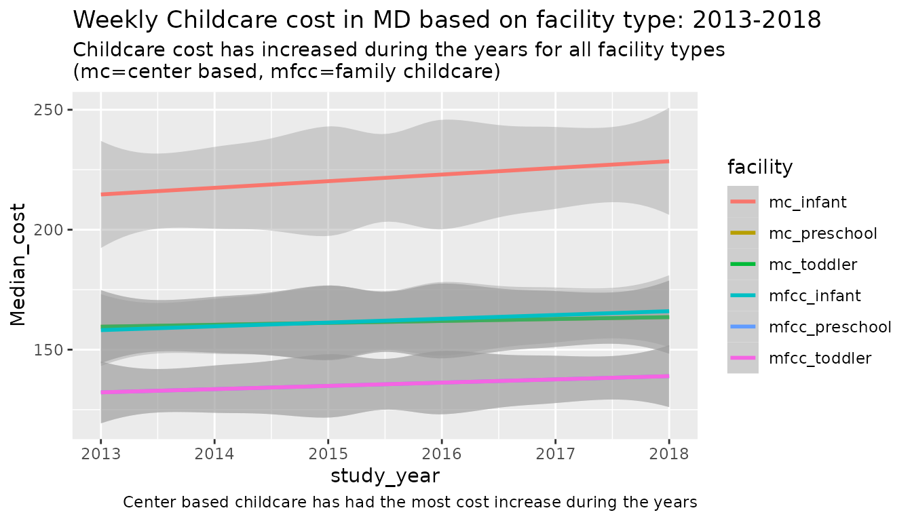
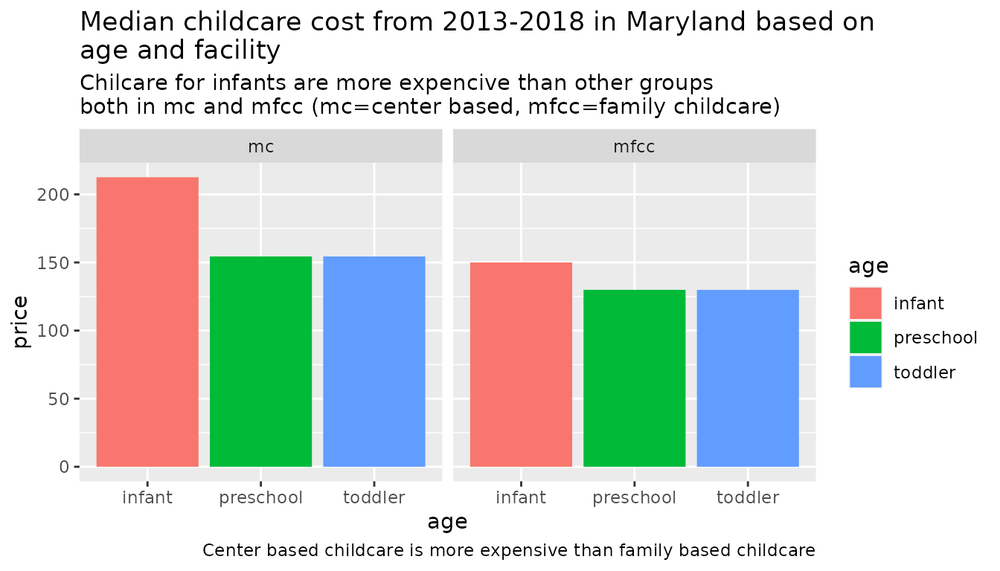
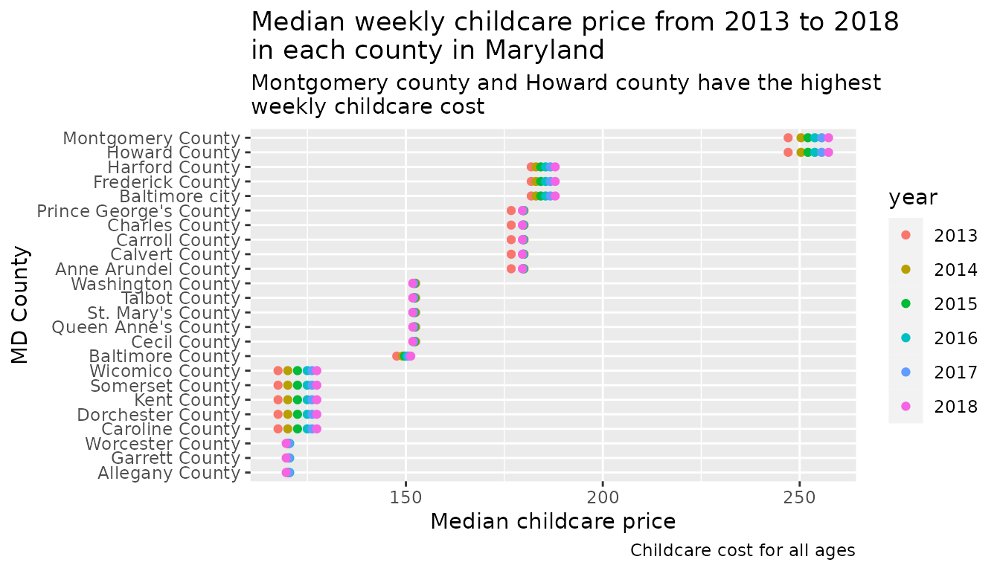

1C: Example data:
what is the data
The data that I chose for this project is about childcare costs from 2008-2018 from National Database of Childcare Prices. My goal is to understand how the childcare cost in Maryland has changed during the years and how it varies across counties. I will perform this analysis for different childcare provider type and children ages. Data dictionary can be found here.
Load in the data in R
#Check if the directory exist:
if(!dir.exists("../data")){
dir.create("../data")
#only download data once:
if(!file.exists(c("../data/childcare_costs.rda","../data/counties.rda"))){
tuesdata <- tidytuesdayR::tt_load('2023-05-09')
tuesdata <- tidytuesdayR::tt_load(2023, week = 19)
childcare_costs <- tuesdata$childcare_costs
counties <- tuesdata$counties
# save the files like this:
use_data(childcare_costs)
use_data(counties)
}}Data wrangling
First join the childcare costs with county data Only select data for Maryland after removing the NA values
childcare<-inner_join(childcare_costs,counties) %>%
drop_na() %>%
filter(state_abbreviation=="MD")
#> Joining with `by = join_by(county_fips_code)`#1 which childcare provider is more expensive To answer this question, I will plot (geom_smooth) the cost of childcare during years colored by different facilities.
childcare_plot1<-childcare %>%
select(study_year,county_name, mc_infant, mc_toddler, mc_preschool, mfcc_infant, mfcc_toddler,mfcc_preschool)
plot_long<-childcare_plot1 %>%
pivot_longer(!c(study_year,county_name), names_to = "facility", values_to = "Median_cost")Plot 1:
ggplot(plot_long)+
geom_smooth(aes(x=study_year,y=Median_cost, color=facility))+
labs(title="Weekly Childcare cost in MD based on facility type: 2013-2018",
subtitle = "Childcare cost has increased during the years for all facility types\n(mc=center based, mfcc=family childcare)",
caption = "Center based childcare has had the most cost increase during the years")
#> `geom_smooth()` using method = 'loess' and formula = 'y ~ x' ## Using 2 fucntion form our package:
A
In this section, I want to know the median childcare cost in years for each facility:
#how much is the average cost of each facility differ from each other
mtx<-childcare_plot1 %>% select(-c(study_year,county_name)) %>% as.matrix()
#find the median cost of each facility across years
col.med<-colMedians(mtx)
plot2<- tibble(facility= names(col.med), price= col.med) %>%
separate(facility,into = c("facility", "age"),sep = "_")
ggplot(plot2)+
geom_col(aes(x=age, y=price, fill=age))+
facet_wrap(vars(facility))+
labs(title="Median childcare cost from 2013-2018 in Maryland based on\nage and facility",
subtitle = "Chilcare for infants are more expencive than other groups\nboth in mc and mfcc (mc=center based, mfcc=family childcare)",
caption = "Center based childcare is more expensive than family based childcare")
B
In this section, I would like to know the median childcare cost in each county in from 2013 to2018
#Find the median childcare cost in each year
row.med<-rowMedians(mtx)
plot3<- tibble(county= childcare_plot1$county_name , year= childcare_plot1$study_year, price= row.med)
ggplot(plot3)+
geom_point(aes(x=price, y=reorder(county, price), color=as.factor(year)))+
labs(y="MD County", x="Median childcare price",
title = "Median weekly childcare price from 2013 to 2018\nin each county in Maryland",
subtitle = "Montgomery county and Howard county have the highest\nweekly childcare cost",
caption="Childcare cost for all ages",
color="year")
Use functions from purrr package to learn more about occupations in counties
I only focused on management occupation as one of the highest payed jobs and wanted to see if there is a differenc between the percentage of males and females in management in any of the counties
#What is the occupation of the parents?
childcare3<-childcare %>% filter(study_year>=2016) %>%
select(study_year,county_name, 39:53)
childcare3 %>%
group_by(county_name) %>%
nest() %>%
mutate(Female_managment = map_dbl(data, ~ mean(.x$femp_m)),
male_managment = map_dbl(data, ~ mean(.x$memp_m))) %>%
arrange(desc(Female_managment))
#> # A tibble: 24 × 4
#> # Groups: county_name [24]
#> county_name data Female_managment male_managment
#> <chr> <list> <dbl> <dbl>
#> 1 Howard County <tibble [3 × 16]> 61.4 60.1
#> 2 Montgomery County <tibble [3 × 16]> 57.1 55.3
#> 3 Frederick County <tibble [3 × 16]> 50.1 43.1
#> 4 Anne Arundel County <tibble [3 × 16]> 49.9 44.1
#> 5 Carroll County <tibble [3 × 16]> 48.3 39.7
#> 6 Calvert County <tibble [3 × 16]> 48.1 34.3
#> 7 Charles County <tibble [3 × 16]> 47.5 35.9
#> 8 Baltimore County <tibble [3 × 16]> 47.5 39.7
#> 9 Queen Anne's County <tibble [3 × 16]> 47.1 37.1
#> 10 St. Mary's County <tibble [3 × 16]> 46.8 43.3
#> # ℹ 14 more rowsHoward County has the highest percentage of male and female in management.Then Montgomery county and Fredrick county.
childcare3 %>% filter(study_year==2018) %>%
mutate(managment = map2_dbl(femp_m,memp_m,mean)) %>%
arrange(desc(managment)) %>%
select(study_year,county_name,managment)
#> # A tibble: 24 × 3
#> study_year county_name managment
#> <dbl> <chr> <dbl>
#> 1 2018 Howard County 61.2
#> 2 2018 Montgomery County 57.1
#> 3 2018 Anne Arundel County 50.5
#> 4 2018 Frederick County 50.5
#> 5 2018 Carroll County 49.0
#> 6 2018 Charles County 48.2
#> 7 2018 Queen Anne's County 48.1
#> 8 2018 Baltimore County 48
#> 9 2018 Calvert County 47.9
#> 10 2018 St. Mary's County 47.4
#> # ℹ 14 more rowsFamilies might not be traditional (one man and women), so we can look at the average of these two for better analysis. On average the counties with highest percentage of individuals in management are Howard county, Montgomery County, and Anne Arundel County
Conclusion:
In this analysis, I was able to look at the childcare costs in Maryland in years form 2013 to 2018 across different counties. Center based childcare for infants is the most expensive childcare type and age group across years and counties. Furthermore, Howard county and Montgomery county have the highest childcare cost and about 60% of parent work in management (fairely high pay job) which makes it more affordable.